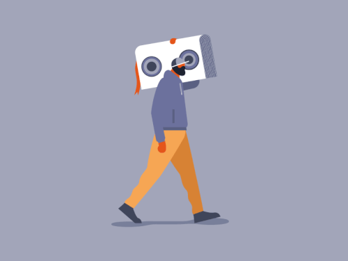

Audiobooks - 7 reasons to make the switch
Jul 7 '21 • Written by Yassen Shopov
📖 9 minute read
What started as another way for boomers to mock millennials (“Look at them charging their books!”) is now an evergrowing trend. Audiobooks and e-books have taken the markets by storm and it’s become rare for a popular book to not become an audiobook at some point.
They have grown so popular that apparently they now make up around 1/3 of all book sales in the USA.
And yet, many people still stick to the classic paperbacks. Not that it’s a bad thing, we can all agree that it’s a very enjoyable activity to sit with a good book and simmer in the experience.
But since our lives have been growing more and more chaotic, there remains little room for reading. So even if people know all the reasons to read more as a rule of thumb, a lot of them simply don’t.
And that’s where audiobooks come in to make it easier for you to make the switch from a non-reader to an avid reader.
I have been dabbling with audiobooks since the beginning of the year and so far I have read (more like, ‘listened to’) 8-10 books, a few of which I didn’t finish or am yet to finish. I can say first-hand, as a young adult who used to read a lot when I was a kid, audiobooks have really transformed me and brought back the joy of getting deep into a storyline and world unlike our own.
The list of benefits is long, and some of the benefits you would get even if you read normal paper books. So if you are still on the verge between normal books and audiobooks, read ahead, here’s a list of 7 reasons to make the switch.
1. Your hands get free again
As minuscule as this sounds, it’s one of the main reasons why people get started with audiobooks in the first place. While nothing can replace the texture of paper on your fingertips and the overall vibe it gives (unless they invent Kindles with an authentic book smell), there are many reasons why one would actually prefer an audiobook.
The ability to listen to a story wherever you are, online or offline, while commuting, in the gym, while walking the dog, is huge. You suddenly get so much time, in my case around 2 hours a day, for reading. Time that can be spent multitasking, that is.
It’s a great way to keep yourself intelectually stimulated without needing a dedicated hor for it. What is more, it’s excellent for disabled people, or people who otherwise find it difficult to sit down with a book for a prolonged period of time.
2. Your ADHD Brain takes off
Now, this may be the main reason why I took a personal liking to audiobooks overall.
When we transitioned to online university this academic year, I had a magical revelation - I can increase the speed of the pre-recorded videos. Instantly, hour-long videos could now be watched much faster, and it trained me to get used to even bigger watch-speeds.
I do the same thing with audiobooks, and now I’m able to go through long descriptions in fantasy books much faster, while still retaining the information.
3. Takes the place of YouTube/Spotify/Netflix
If you’re like me, you’re probably already with your headphones on. I’m used to always listening to something, either for entertainment (YouTube), or for educational purposes (Spotify).
Since I’m using Audible though, I have brought diversity to my listening habits, and now I can replace my mindless streaming of content with a bit more mindful practices.
Of course, this isn’t something you should overuse, since your brain is already burdened with information overload. But if you have to choose, it’s probably a better thing to choose a book over another silly compilation video.
4. Increases your creativity
When you’re exposed to information, you are either directly consuming it, or it’s running in the background.
It may seem counter-intuitive, but it’s often not the best tactic to focus directly on stuff. Oftentimes, especially if you are trying to produce creaitve content, you need to enter the so-called ‘diffused mode of thinking’. This is when your brain works on problems in the background, and doesn’t require active thinking to produce results. It is the same event that occurs when you get a shower thought - you are doing a relatively mindless task, and you brain gets left free to roam and think up new ideas.
You’ll see for yourself, you’ll find yourself clinging to random phrases from audiobooks which can later result in great ideas.
5. Teaches you to listen carefully
It has been well-known for quite a while that some people are more well-tuned to be auditory learners than others. However, with more and more information coming out each day, it becomes crucial that we are all able to take in content in more than one form.
For example, I need to visualise concepts in order to really understand them, which often takes me pen and paper. However, this is not always accessible, and I needed to find a way to activate my imagination better.
This is where audiobooks come to the rescue. They have really helped me visualise scenes in my head more vividly, and since I mainly listen to audiobooks that are non-fiction, it really pushes me to become more of an auditory learner.
6. Makes it easier to read more
It may not be the most important stat on your list, but it’s heavily linked with higher success. The more book titles you get under your belt, the higher your chances of actually implementing this accumulated knowledge.
Audiobooks, especially with their ability to increase the speed of reading, make it much easier to get more books read in a short period of time. Yes. the quality of knowledge retention may be decreased, but that is compensated by the sheer quantity of books you get to experience.
What is more, audiobooks tend to be cheaper than actual paper books, so you should take that into consideration.
Quick tip: try to always have 2 books on standby at the same time, so when you get bored of one, you can go to the other, and vice versa.
7. Makes it more immersive
And as a final note, for the fiction-enjoyers out here, audiobooks make for a more immersive experience.
The narrators tend to be very professional, and unless you’re especially unlucky, you’ll get to hear a very unique and believable telling of your favourite stories. The whole audiobook-ifying process for normal fantasy books is amazing, since for us readers it’s almost like a movie being brought to life. The fantasy series I’m currently reading is being narrated so well, the narrator even switches between accents for the non-UK characters, and that makes it even easier to follow along.
Some recommendations for audiobooks to get you started
Here are some personal recommendations to inspire you to make the switch to audiobooks, and are all amazing books by themselves.
[11:16]
by Ali Abdaal